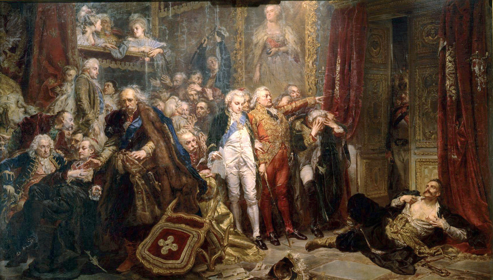
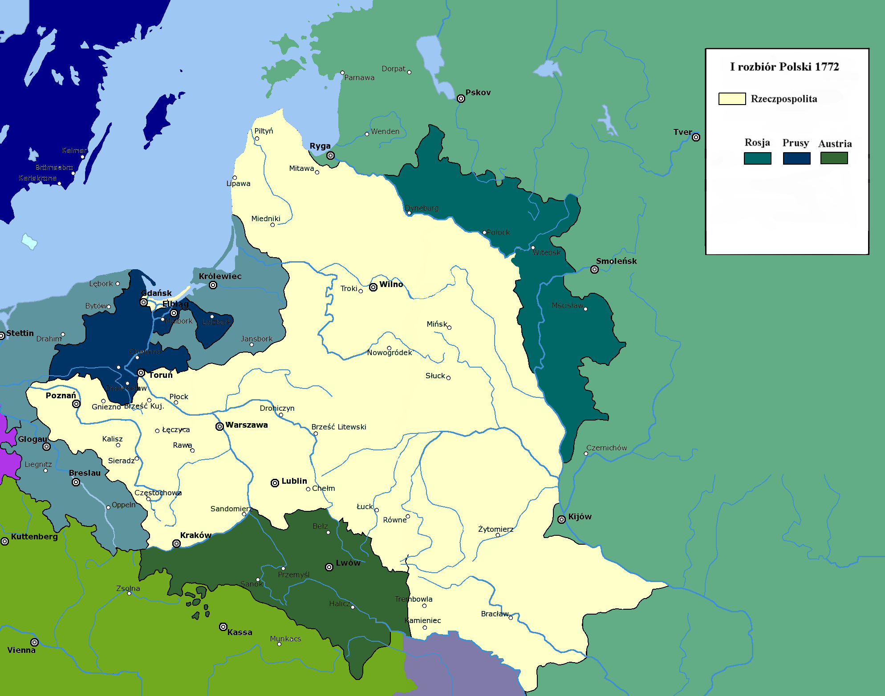
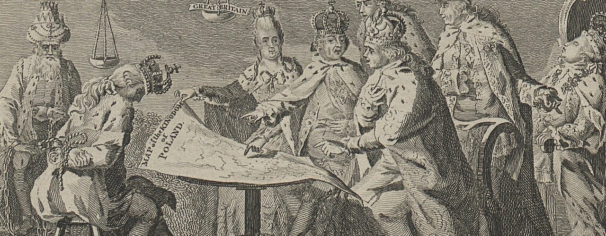

Geneza i tło historyczne
I rozbiór Polski, dokonany w 1772 roku, był rezultatem wieloletniego procesu osłabiania państwa polskiego, które zmagało się z problemami zarówno wewnętrznymi, jak i zewnętrznymi. Rzeczpospolita Obojga Narodów od wieków była państwem o wyjątkowej strukturze ustrojowej, w której władza rozproszona była pomiędzy szlachtę a monarchę. Taki system, oparty m.in. na zasadzie liberum veto, sprawiał, że decyzyjność w państwie była utrudniona, a reforma polityczna niemożliwa do przeprowadzenia.
Kluczowe czynniki osłabiające państwo obejmowały:
- System liberum veto: Każdy poseł mógł zablokować obrady sejmu, co prowadziło do paraliżu legislacyjnego i uniemożliwiało podjęcie niezbędnych reform.
- Walka frakcyjna: Rywalizacja między potężnymi rodami szlacheckimi oraz konflikty interesów magnatów sprzyjały rozłamom wewnętrznym.
- Słaba władza centralna: Pomimo wysiłków króla Stanisława Augusta Poniatowskiego, brak realnych uprawnień uniemożliwiał skuteczne przeciwdziałanie wpływom zagranicznym oraz wewnętrznym nadużyciom.
- Kryzys gospodarczy: Wieloletnie wojny, nieefektywna administracja i brak modernizacji gospodarki przyczyniły się do upadku potencjału ekonomicznego państwa.
Na tle powyższych problemów, sąsiednie mocarstwa – Rosja, Prusy i Austria – dostrzegły możliwość wykorzystania słabości Rzeczypospolitej. W wyniku intensywnych intryg dyplomatycznych i militarnych, państwa te zaczęły stopniowo zacieśniać swoje wpływy w regionie, przygotowując grunt pod pierwszy rozbiór Polski.
Warto podkreślić, że oprócz wewnętrznych słabości, ważną rolę odgrywał również szerszy kontekst europejski. Epoka oświecenia, z jednej strony promująca idee postępu i reform, z drugiej – pełna ambicji imperialnych, stworzyła warunki, w których państwa o silnych armiach i dobrze zorganizowanej administracji mogły skutecznie ingerować w wewnętrzne sprawy swoich sąsiadów.

Przebieg I Rozbioru
Proces pierwszego rozbioru Polski był wynikiem skomplikowanych negocjacji i działań dyplomatycznych, w których główną rolę odegrały trzy mocarstwa: Rosja, Prusy oraz Austria. Kulminacją tych wydarzeń było podpisanie traktatu rozbiorowego w Petersburgu, który został sformalizowany 5 sierpnia 1772 roku. Traktat ten nie tylko ustalał granice nowych państw, ale także potwierdzał, że decyzje podejmowane pod presją obcych interesów miały charakter przymusowy.
Na mocy traktatu, Rzeczpospolita utraciła znaczną część swojego terytorium oraz ludności – szacowano, że straty te wyniosły około 30% powierzchni oraz 35% populacji państwa. Podział ziemi nastąpił według następujących zasad:
- Rosja: Przejęła terytoria na wschodzie, obejmujące części dzisiejszej Białorusi oraz Ukrainy, w tym ziemie położone na wschód od rzek Dźwiny i Druci. Obszar ten miał strategiczne znaczenie zarówno pod względem militarnym, jak i gospodarczym.
- Prusy: Zagarnęły większość Prus Królewskich, a także tereny Kujaw i Wielkopolski. Działania te miały na celu nie tylko poszerzenie granic, ale również umocnienie pozycji Prus w Europie Środkowej.
- Austria: Otrzymała obszary Galicji, w tym część Małopolski oraz Ruś Czerwoną, a także fragmenty Podola i Wołynia. Te ziemie stały się później fundamentem dla rozwoju regionu, mimo że obarczone były licznymi problemami administracyjnymi i etnicznymi.
Traktat rozbiorowy został zatwierdzony przez sejm, zwołany pod presją zaborców, co uczyniło decyzję formalnie legalną, choć moralnie i historycznie nie do przyjęcia. Proces ten był świadectwem bezwzględnej gry sił, w której mniejsze państwo zostało zmuszone do ustępstw na rzecz znacznie potężniejszych rywali.
Dodatkowo, działania dyplomatyczne poprzedzające rozbiór obejmowały liczne sojusze, tajne porozumienia oraz militarną mobilizację, które miały na celu zminimalizowanie oporu wewnętrznego oraz stłumienie ewentualnych prób odbudowy suwerenności przez polską szlachtę i inteligencję.

Konsekwencje społeczne i kulturowe
I rozbiór Polski miał daleko idące skutki, które odczuwały kolejne pokolenia. Utrata terytoriów wiązała się nie tylko z fizycznym oddzieleniem ludzi, ale również z rozbiciem tradycyjnych struktur społecznych oraz kulturowych. W wyniku podziału państwa nastąpiły znaczące zmiany w życiu codziennym obywateli:
- Przesiedlenia i migracje: Liczne społeczności zostały rozproszone, a granice zaborcze narzuciły nowe realia administracyjne. Wielu Polaków musiało opuścić swoje rodzinne strony, co doprowadziło do osłabienia lokalnych wspólnot i tradycji.
- Rozpad więzi społecznych: Historycznie silne związki między regionami zostały przerwane, co utrudniało współpracę i wspólne działania na rzecz kultury oraz edukacji. Rodzinne i sąsiedzkie relacje uległy znacznemu rozluźnieniu.
- Represje kulturowe: Zaborcy, szczególnie na terenach włączonych do imperium rosyjskiego i austriackiego, wdrażali politykę asymilacyjną, mającą na celu ograniczenie wpływów kultury polskiej. Wprowadzano zakazy używania języka polskiego w urzędach, szkołach oraz mediach, co miało długofalowy wpływ na tożsamość narodową.
- Rozwój świadomości narodowej: Paradoksalnie, represje i utrata niepodległości stały się impulsem do zjednoczenia i mobilizacji społeczeństwa. W wyniku tych doświadczeń zaczęto kształtować idee walki o niepodległość, co zaowocowało powstaniem tajnych organizacji i ruchów oporu.
- Zmiany w strukturze edukacyjnej: Pomimo prób narzucenia obcych systemów oświaty, polscy działacze kulturalni oraz nauczyciele podejmowali wysiłki w celu zachowania polskiego dziedzictwa, organizując tajne nauczanie oraz publikując nielegalne podręczniki.
Społeczne skutki rozbioru były odczuwalne nie tylko w sferze politycznej, ale również w życiu codziennym, gdzie każdy obywatel musiał zmierzyć się z utratą dotychczasowych przywilejów, przekształceniem tożsamości regionalnej oraz narastającym poczuciem krzywdy narodowej. W dłuższej perspektywie rozbiór stał się fundamentem dla późniejszych prób odzyskania niepodległości oraz budowy nowoczesnego państwa polskiego.
Te ydarzenie nie tylko zmieniło układ sił w Europie Środkowej, ale również przyczyniło się do ukształtowania podejścia Polaków do kwestii wolności.
